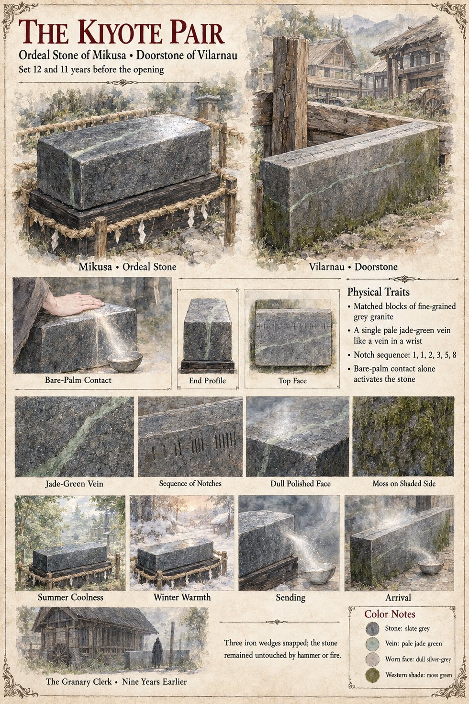

The Kiyote Pair
Catalyst of Case 2231 · the Ordeal Stone of Mikusa and the Doorstone of Vilarnau · set eleven and twelve years before the opening
A matched pair of one-way transit stones, each a grey granite block with a single green vein “like a vein in a wrist” and, cut into its flank, a short column of notches in clusters: one, one, two, three, five, eight. The receiver was set first, as routine instrumentation, in the moot-green of Vilarnau under the oak, where the Charter makes it the village's tally-stone: waist-high, three paces long, a ruled scale cut across its top and an oak beam beside it for the weights. The sender was dressed eleven years before the opening, after the Left Ministry bought a shrine-stone at the lowest of three bids, and stands at Mikusa as a knee-high block on a plinth of black cedar behind a straw rope. A mute stonecutter dressed both. He proposed no ordeal and supplied no doctrine; the Ministry named the stone's purpose for itself. The notches are his standing signature and do nothing.
The sender works on bare open-palm contact alone. Through cloth, a broom or the backs of the fingers it registers nothing, which is why Jōkei, who sweeps it every morning for eleven years, is never sent. A hand laid on it turns a man into a pale grain that pours sideways into the stone like sand through the neck of a glass, and the receiver pours him out again on the far side of the world; it cannot be reversed. In the east the device has no output but absence, which a court reads as a verdict. In the west it has no stated function at all: a tally-stone is a tally-stone, until a stranger comes out of it and the village starts touching it on its way to somewhere else. Two iron wedges break on its flank and a third rebounds without leaving a mark, and a fire that takes the thatch of the lane leaves it standing in the heat with a charred wreath of ivy. In the nineteenth year the western block is reduced to dust, leaving a clean rectangular hollow, and the eastern is recovered at the same instant; Jōkei finds on its plinth a low heap of pale dust in the exact shape of a stone. The sheet's slate grey, jade-green vein and moss on the shaded side are its own color notes; the manuscript gives the grey, the green vein, and the moss in the last years. Case 0202 gives the Stone one more use, by a hermit of Val Muta named Vara, who kneels at it with a short bent tool and makes it, for one dusk, not one-way; that file and this one tell the end of the Stone differently, and the pages are not reconciled. Case 4181 keeps the Stone's end as the stranger remembers it, on the first morning of Averin: a clean rectangular hollow on the green and a little grey dust blowing off it, and a name said into the dust for the last time.
Appears In

Related Subjects


Related Records

At the grey of dawn on the twentieth of Garren, Tomobe no Higaide sets his left palm on the Stone of Mikusa and goes into it as pale grain, in the sight of Jōkei, his three senior priests and a Minister with Azuki curled in the fold of his sleeve.

At dusk on the nineteenth of Garren the pale grain of Tomobe no Higaide pours back up out of the tally-stone of Vilarnau into the shape of a man with his palm still on its face; Peire, eight, watches with a switch in his hand, and on the road above Observer 618 stops walking.